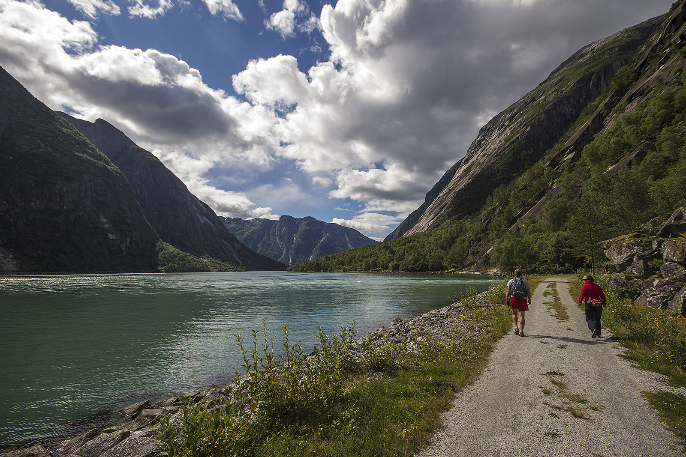
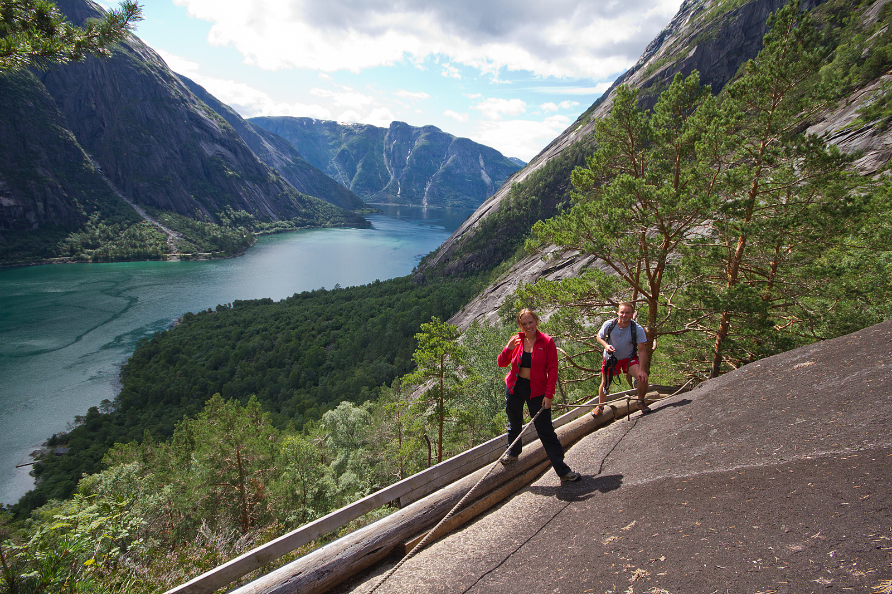
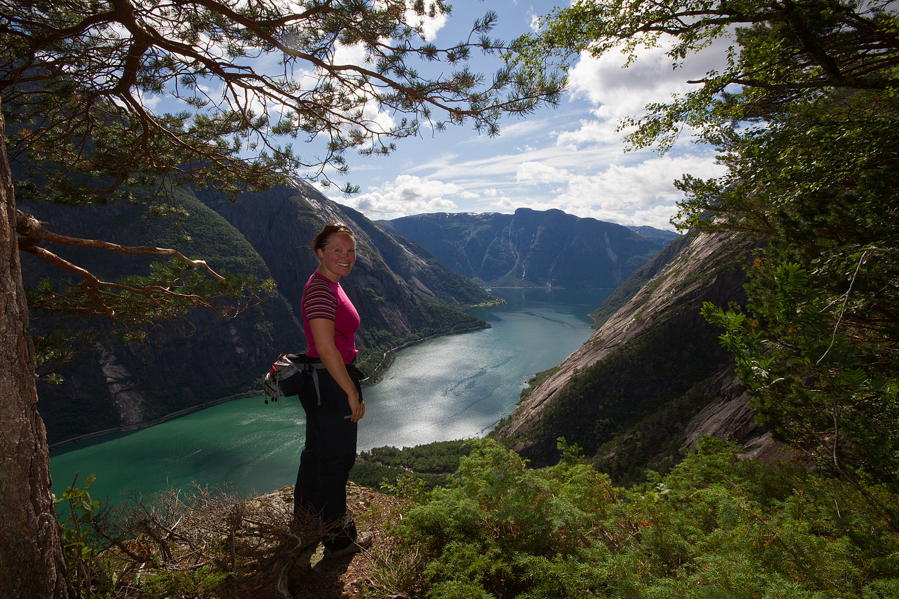

Kjeåsen i Hardanger
Kjeåsen er ein fjellgard i Eidfjord kommune i Hordaland. Garden ligg på ein avsats i fjellet ca. 530 moh innerst i Simadalsfjorden.
Du kan nå Kjeåsen til fots opp den bratte stien frå Sima kraftverk, der det og er parkeringsplass. Merk derimot at det ikkje er lov å campe nede ved fjorden her. Frå parkeringsplassen tek du til høgre utover fjorden og går forbi ein tunnel som kjem ut av fjellet og bidrar til kraftkommunen Eidfjord sitt maskineri. Deretter begynner stien, først i litt ulendte steinar, før det går over til småklyving i godt merka stiar.


Stien blir ikkje verre enn dette, og er som du ser godt sikra.


Utsikta langs dei bratte liene er i mangel på betre ord magisk, fantastisk og heilt på kanten.


Når du kjem opp på sommarstid blir du møtt av hyggelege folk som gjerne tar ein prat medan du får kjøpt vafler og andre godsaker. Utsikta får du gratis.

Kjeåsen har og det som blir kalla «verdas dyraste gardsveg», 5 km veg der ca. 2,6 km tunnel fra Simadalen opp til garden. Tunnelen har eit køyrefelt, med oppkøyring kvar heile klokketime og nedkøyring kvar halve klokketime. Vegen og tunnelen til Kjeåsen blei bygd i 1974 i forbindelse med kraftutbygginga i Simadalen. Tunnelen har ikkje lys, og Destinasjon Eidfjord anbefalar derfor folk å ikkje gå denne vegen. Og kvifor skal du det når utsikten er så flott på gamlevegen?
NRK sin populære serie "Der ingen skulle tru at nokon kunne bu" har sjølvsagt vore på Kjeåsen og. Vel verdt ein titt!